Your spirit animal to watch for
How confirmation may find you
Psychic Protection
Your guide will remain here until tomorrow.
KELA · Messages from the Trees
Ever feel like your deepest thoughts need confirmation?
Click to reveal the spirit animal ready to show up in your life—and keep showing up as confirmation along your path.
KELA
Messages from the TreesOne messenger · One path
Close your eyes, hold your question, and take one slow breath.
Watch for its return as ongoing confirmation.Your spirit animal to watch for
How confirmation may find you
Psychic Protection
Local preview: Patti can cycle through all 22 spirit-animal cards.
The Echo
In the days ahead, your spirit animal may show up in a conversation, book, picture, toy, dream, song, passing remark, or an unexpected place in nature. The form can be ordinary. The timing is what asks you to pause.
When it appears, return to the question on your card. Notice what you were thinking, asking, or deciding just before the animal found you. Let the moment support reflection; it does not make decisions for you or promise a particular outcome.
A private little mystery
The draw happens on your device. You do not need to enter a name or private question.
Your messenger stays with you until tomorrow, giving its Echo time to find you.
Keep what supports reflection. Your choices and your path remain your own.
Explore every original animal guide in the KELA deck. Your daily draw will choose one messenger and reveal its complete reflection.
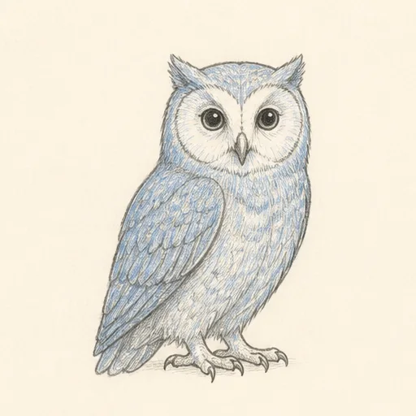
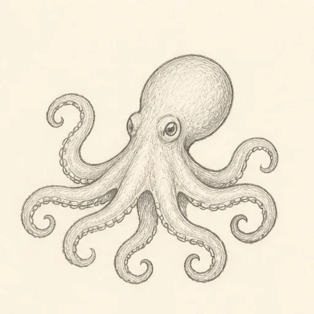
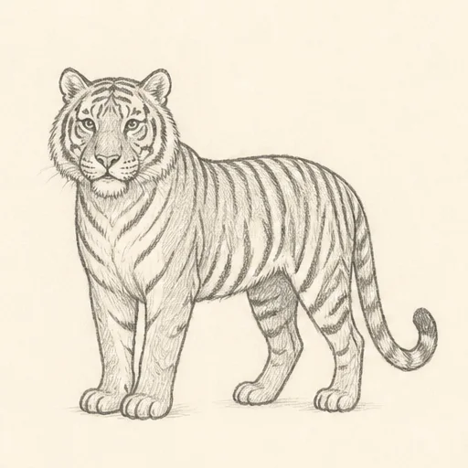
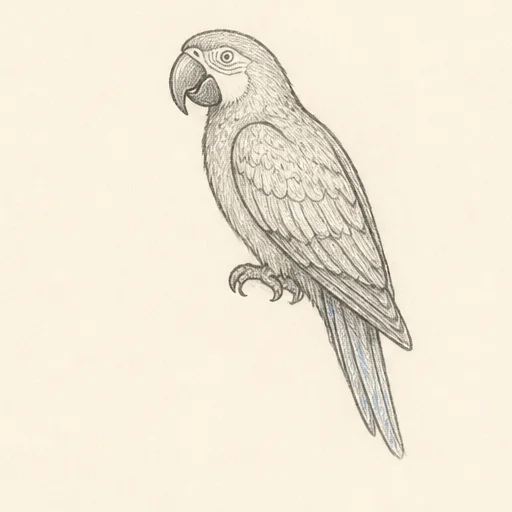
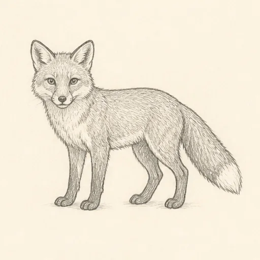
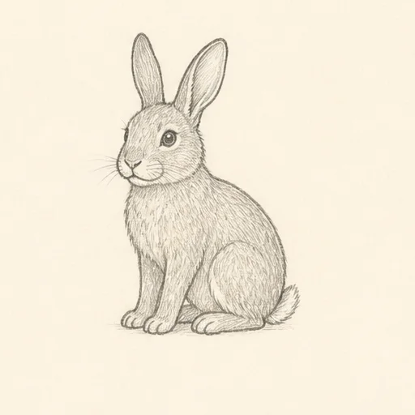
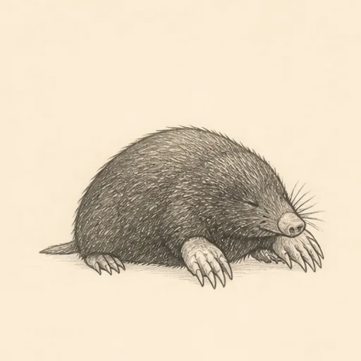
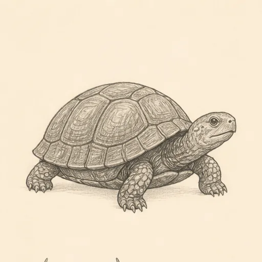
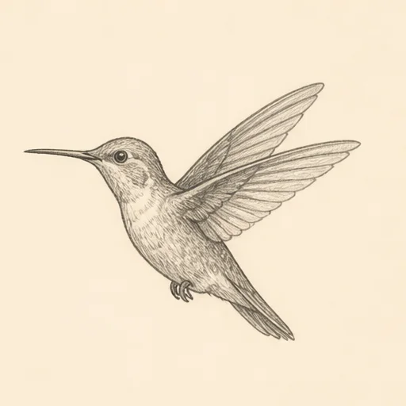
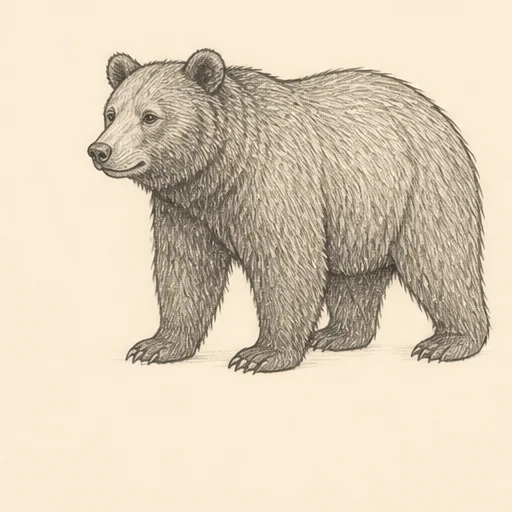
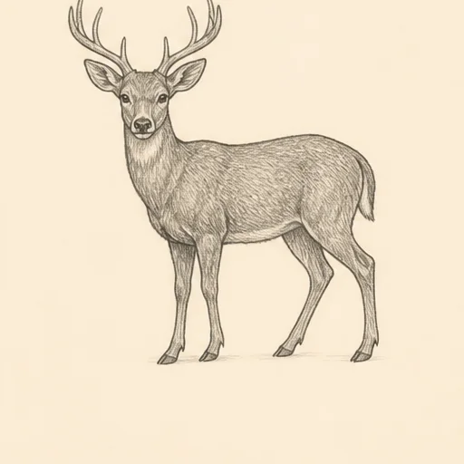
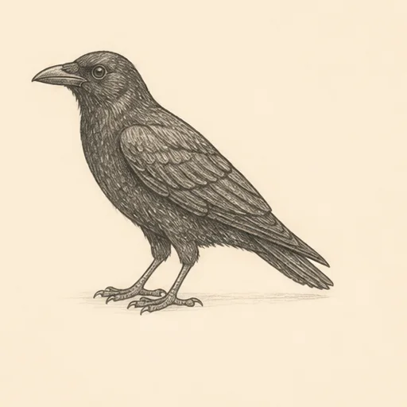
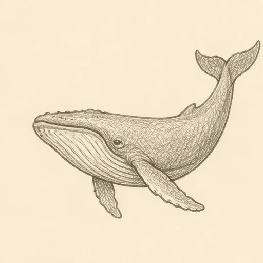
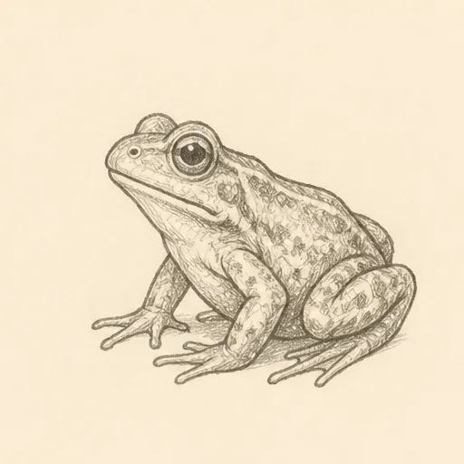
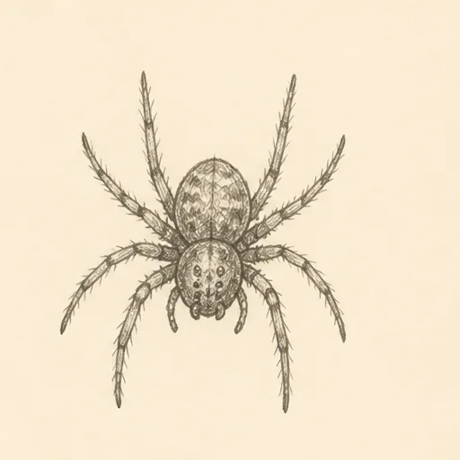
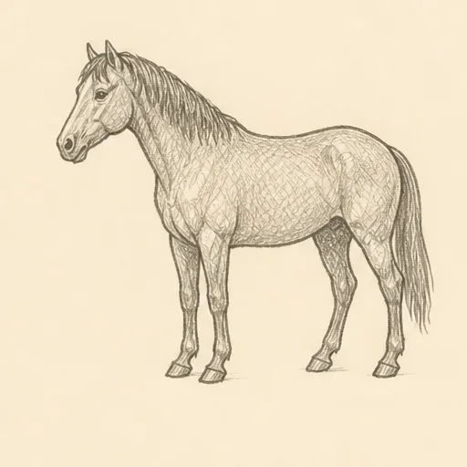
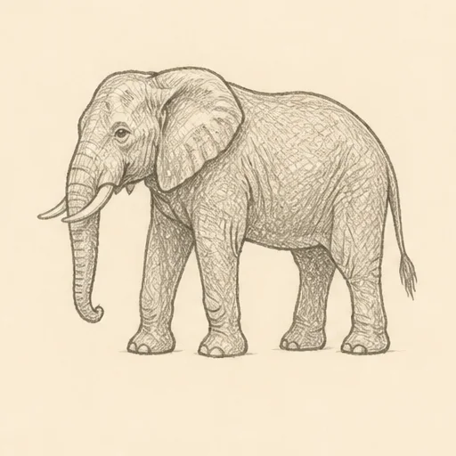
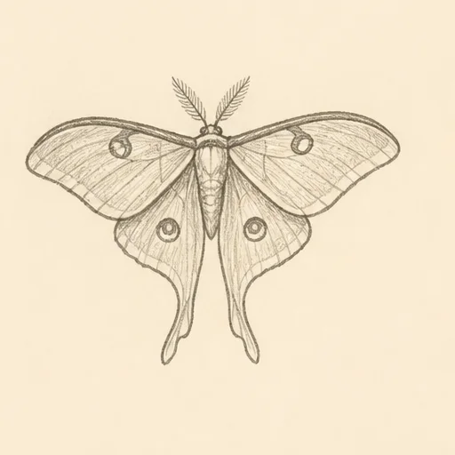
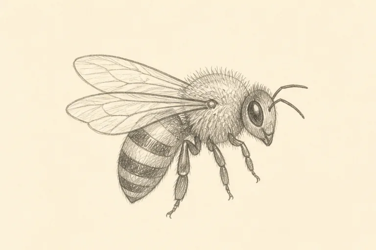
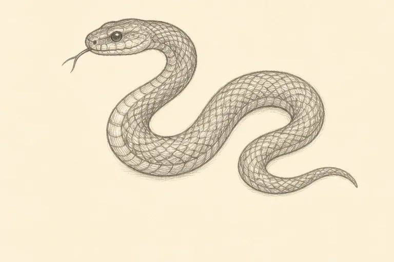
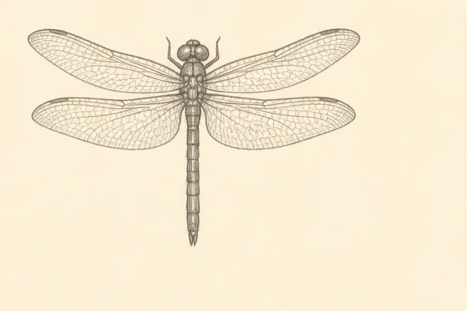